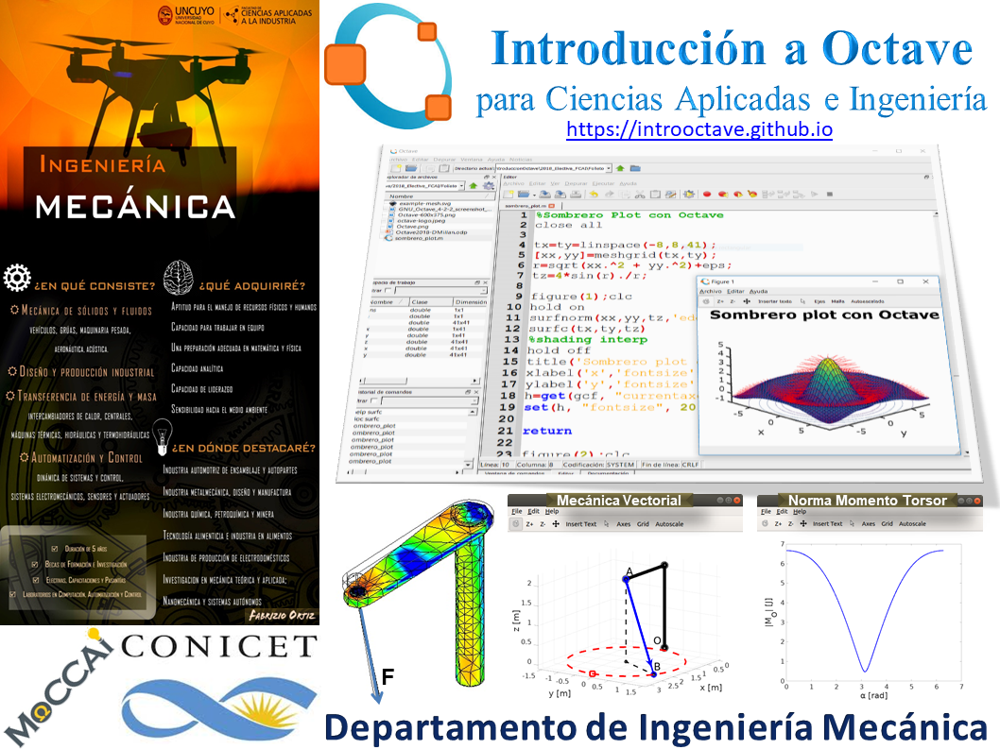

Mecánica de los Sólidos
Curso de grado de la carrera de Ingeniería Mecánica de la FCAI-UNCuyo, correspondiente al segundo semestre de tercer año.
Este curso posee como objetivo específico que el estudiante adquiera una formación sólida e integral en equilibrio y estabilidad, así como en aspectos básicos de resistencia de materiales.
Al estudiante
Con la esperanza de que esta obra estimule
su interés por la Ingeniería Mecánica
y proporcione una guía aceptable
hacia su comprensión.
Russell C. Hibbeler
Durante el cursado se empleará GNU Octave para la resolución y análisis de diversos problemas que se presentan en resistencia de materiales. GNU Octave es un programa gratuito que emplea lenguaje de alto nivel, destinado principalmente a cálculos numéricos. Para mayores detalles el lector interesado puede consultar el curso Introducción a Octave así como bibliografía, ejemplos y clases.
Fechas y Horarios
- Fecha de inicio: martes 5 de agosto de 2019.
- Fecha de finalización: viernes 8 de noviembre de 2019.
- Duración: 120 hs.
- Cursado:
- Teoría: días martes y viernes de 9:00-12:00hs (6:00hs),
- Práctica: días viernes de 15:00-17:30hs (2:30hs).
- Consultas:
- Teoría: martes de 15:00-16:00hs.
- Práctica: viernes de 17:30-18:30hs.
- Las clases se impartirán en aula a designar en la segunda planta de la FCAI, en éstas se expondrán los conceptos teóricos y se resolverán ejemplos concretos, además se llevará a cabo la resolución de problemas seleccionados de las guías de problemas.
Evaluación
Para regularizar la asignatura se deberá aprobar con 6 o más cada uno de los dos parciales o el recuperatorio en su defecto. Además, se deberá presentar en forma escrita un reporte técnico desarrollando un tema a definir conjuntamente con la cátedra (de una lista de temas) sobre el cual el estudiante realizará una exposición y defensa oral. Para promocionar esta última instancia el estudiante deberá obtener una nota igual o superior a 8. Aquellos estudiantes que no promocionen deberán aprobar en el examen final los temas seleccionados mediante la realización de ejercicios diferenciados.
La nota final se contabilizará como el promedio ponderado del 80% de la nota obtenida en el examen final y del 20% de la nota obtenida en la evaluación de los temas promocionables.
- Parciales:
- 1er parcial: martes 3 de septiembre de 9:00-13:00hs.
- 2do parcial: martes 15 de octubre de 9:00-13:00hs.
- Recuperatorio único:
- martes 29 de octubre de 9:00-13:00hs.
- Exposición y defensa de Tema Promocional:
- viernes 8 de noviembre de 15:00-18:00hs.
Herramientas
- En Clases se irán colgando los apuntes de las diferentes unidades, así como cualquier otro material referente a los contenidos.
- En Prácticas se ubicarán las guías de Trabajos Prácticos donde se detallan los ejercicios que deben ser entregados de forma obligatoria.
- En Biblio pueden encontrar material de estudio seleccionado por la cátedra.
Equipo Docente
- Nos encuentran principalmente durante la mañana en la oficina/aula 40 (tercer piso – posgraduación).
- Grupo de Modelado Computacional en Ciencias Aplicadas e Ingeniería (MoCCAI).
Dr. Ing. Daniel Millán (responsable - Web Personal)
- Inv. Adjunto CONICET y Prof. Titular FCAI - Dpto. Ing. Mecánica.
- dmillan@fcai.uncu.edu.ar
Comentarios y recomendaciones

- Frustrarse es típico y temporal.
- La curva de aprendizaje vs contenido del curso es sigmoide.
- Persistencia y dedicación ¡Kovalski!
Créditos
Esta web está basada en la web https://introunix.github.io.